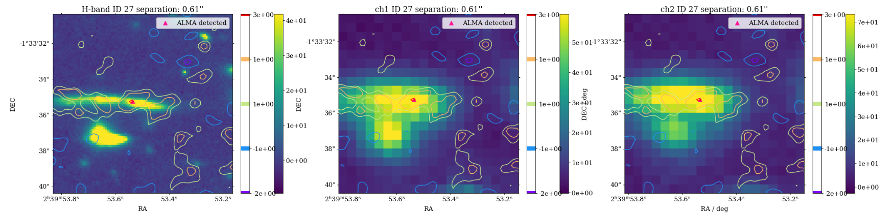

Observational Data Matching Plot
hunyjm12/Master_Project_ALCS →
Optical/NIR (HST & Spitzer) and ALMA 1.2 mm counterpart matching in the Abell 370 cluster field.
View Python Notebook →Research Interests
Detailed Research Page →- › Dusty Star-Forming Galaxies (DSFGs) at high redshift
- › ALMA Lensing Cluster Survey (ALCS) & Gravitational Lensing
- › Multi-wavelength Photometry & SED Fitting
- › UVJ Color Diagnostics & Star Formation Rate Analysis